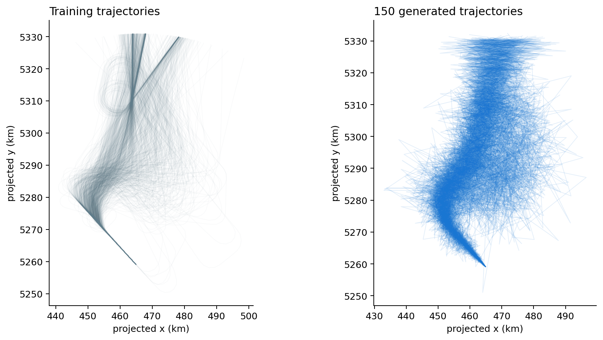
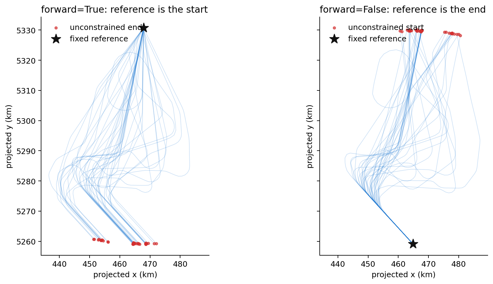
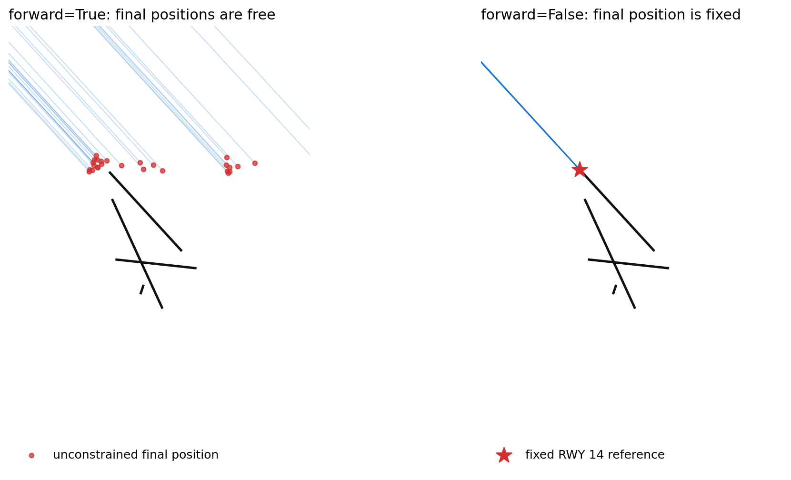

Trajectory generation¶
Generation is a class provided by traffic to connect a Traffic collection
to an external generative model:
from traffic.algorithms.generation import Generation
It is an adapter, not a generative model of its own. The external model learns
and samples numerical vectors, while Generation handles trajectory-specific
preparation and reconstruction. The example below uses a Gaussian mixture
because its API is small, not because it is a good trajectory model. A VAE,
diffusion model, or another generator can be used through the same class when
it implements the model contract.
Experimental API
Trajectory generation currently provides a thin adapter around a generative model. It does not supply a model, enforce physical constraints, or guarantee realistic trajectories. Read the current limitations before using generated data in an analysis.
Why use a Generation object?¶
A model such as GaussianMixture knows how to fit and sample a matrix. It does
not know how flights are separated inside a Traffic object, how trajectory
features should be flattened, or how sampled values become timestamped
geographic positions.
Generation keeps that boundary explicit:
| Component | Responsibility |
|---|---|
Traffic |
Stores and separates the source flights. |
Generation |
Selects features, applies scaling, reshapes data, and rebuilds Traffic samples. |
| External model | Learns a distribution from a matrix and samples new vectors. |
This is the same general pattern used by Flight.filter(): traffic provides the
data integration, while a filter object implements the numerical operation.
The wrapper gives different model implementations one common entry point and
keeps the fitted model, feature list, and scaler together. Fit once, then call
sample() repeatedly without repeating the preparation logic.
The Traffic.generation() convenience method returns the fitted wrapper
directly. Keeping this logic outside Traffic also prevents model-specific
options from accumulating on the core data structure.
How the data is represented¶
A generative model expects one fixed-size vector per observation. A Traffic
object instead contains a variable number of timestamped points per flight.
Preparation therefore follows four steps:
- identify each flight with
assign_id(); - resample every flight to the same number of points;
- choose the features that describe one point;
- flatten each flight into one row of the model matrix.
For n flights resampled to p points with f features, the fitted matrix has
shape (n, p × f). The fixed number of points is not optional: Generation
cannot stack trajectories of different lengths.
The reverse operation happens during sampling. Each model sample is reshaped to
(p, f), assigned a synthetic flight identifier, and returned as part of a new
Traffic object.
End-to-end example¶
The following example uses landing trajectories at Zurich Airport. It models
projected position, altitude, and elapsed time with a two-component Gaussian
mixture. This is intentionally a poor model: it keeps the fitting and sampling
steps short enough to expose the complete Generation workflow.
import numpy as np
import pandas as pd
from cartes.crs import EuroPP
from sklearn.mixture import GaussianMixture
from sklearn.preprocessing import MinMaxScaler
from traffic.algorithms.generation import Generation
from traffic.data.datasets import landing_zurich_2019
GaussianMixture and MinMaxScaler require the learning optional dependency.
Install traffic[learning] if scikit-learn is not already available.
Start by selecting a coherent family of trajectories. Every flight is then resampled to 100 points. Here the first 1,000 flights are retained to keep the example reasonably quick.
traffic = (
landing_zurich_2019
.query("runway == '14' and initial_flow == '162-216'")
.assign_id()
.unwrap()
.resample(100)
.eval()
)[:1000]
Projected coordinates are preferable to longitude and latitude for this local
example. Elapsed time is measured from the beginning of each flight; it must be
computed explicitly because timedelta is not normally present in trajectory
data.
traffic = traffic.compute_xy(projection=EuroPP())
def elapsed_seconds(frame: pd.DataFrame) -> pd.Series:
return (frame.timestamp - frame.timestamp.min()).dt.total_seconds()
traffic = (
traffic.iterate_lazy()
.assign(timedelta=elapsed_seconds)
.eval()
)
Fit the external model through Generation. Scaling prevents features with
large numerical ranges from dominating the fit.
generator = Generation(
generation=GaussianMixture(
n_components=2,
covariance_type="diag",
random_state=42,
),
features=["x", "y", "altitude", "timedelta"],
scaler=MinMaxScaler(feature_range=(-1, 1)),
).fit(traffic)
The same operation is available from the Traffic object:
generator = traffic.generation(
generation=GaussianMixture(
n_components=2,
covariance_type="diag",
random_state=42,
),
features=["x", "y", "altitude", "timedelta"],
scaler=MinMaxScaler(feature_range=(-1, 1)),
)
Sampling returns a Traffic object. Because the model uses projected x and
y, the same projection is required to reconstruct longitude and latitude.
generated = generator.sample(150, projection=EuroPP())

The generated trajectories reproduce the broad direction of the training set,
but many paths are jagged or implausible. Two diagonal Gaussian components are
a very weak description of this high-dimensional distribution. The model has
no explicit notion of smoothness, turn rate, aircraft dynamics, or route
structure. This output explains the adapter; it is not a realistic traffic
simulator. More suitable models, including VAEs and diffusion models, can be
used without moving trajectory preparation and reconstruction out of
Generation.
Feature and coordinate choices¶
Generation can rebuild geographic coordinates in three ways:
| Generated features | Sampling argument | Behaviour |
|---|---|---|
latitude, longitude |
none | Coordinates are used directly. |
x, y |
projection=... |
Projected coordinates are converted back to longitude and latitude. |
track, groundspeed |
coordinates=... |
Positions are integrated from a known start or end point. |
Reconstructing positions from track and groundspeed¶
Track and groundspeed describe motion, not absolute position. Reconstructing a
trajectory from them requires one known position as a boundary condition. The
coordinates argument supplies that position, while forward selects which
end of the trajectory it belongs to:
forward=Truefixes the first generated point atcoordinates, then integrates track and groundspeed forward in time. This is the natural choice for a departure whose initial position is known.forward=Falsefixes the last generated point atcoordinates, then reconstructs earlier positions backwards. This is usually the right choice for landing trajectories when the runway endpoint is known.
Fit a generator with track, groundspeed, and timedelta among its features:
track_generator = traffic.generation(
generation=GaussianMixture(
n_components=2,
covariance_type="diag",
random_state=42,
),
features=["track", "groundspeed", "altitude", "timedelta"],
scaler=MinMaxScaler(feature_range=(-1, 1)),
)
The choice of reference depends on which endpoint is known. For a forward reconstruction, use a representative point at the beginning of the approach. The generated final positions should then fall near Zurich, but nothing forces them to intersect a runway:
approach_start = {"latitude": 48.12822, "longitude": 8.56836}
forward_landings = track_generator.sample(
40,
coordinates=approach_start,
forward=True,
)
For landing data, the stronger boundary condition is usually the runway end. Pass a reference near runway 14 and reconstruct backwards:
runway_14 = {"latitude": 47.48365, "longitude": 8.53391}
backward_landings = track_generator.sample(
40,
coordinates=runway_14,
forward=False,
)
Both reconstructions below use the same 40 track, groundspeed, altitude, and elapsed-time profiles sampled from the training matrix. The overview shows the complete trajectories and the endpoint fixed in each direction.

The airport view then magnifies the final part of the same trajectories. The
Zurich runways are drawn with
airports["LSZH"].plot(ax, footprint=False, runways=True).

On the left, forward=True fixes a representative approach start outside the
airport view. The red circles are the unconstrained final positions: they reach
the airport area but do not necessarily meet runway 14. On the right,
forward=False fixes every final point at the red star. Earlier points are
reconstructed backwards from that runway reference.
This endpoint constraint does not make a trajectory physically valid. It only translates the reconstructed path so that one end meets the supplied coordinate. Track errors, unrealistic speeds, or poor generated time profiles still affect the complete path. The current API also applies one reference coordinate to all samples; it cannot accept a different runway point for each generated flight.
This mode specifically requires a feature named timedelta; Generation uses
it to create the timestamps needed for integration. Positions are accumulated
from speed and track, so small errors propagate along the trajectory.
Model contract¶
Generation accepts a trainable object with two methods:
def fit(X):
...
def sample(n_samples):
return samples, metadata
During Generation.fit(traffic), X is a NumPy array with shape
(n_trajectories, n_points × n_features). The model must fit from that matrix.
Model settings should currently be passed to the model constructor, as in
GaussianMixture(n_components=2), rather than to Generation.fit().
During Generation.sample(n_samples), the model must return a pair:
- a NumPy array with shape
(n_samples, n_points × n_features); - a second array containing model-specific metadata.
Generation uses the first item and currently ignores the second. The number
of columns must match the matrix used for fitting so each row can be reshaped
back to (n_points, n_features).
GaussianMixture satisfies this contract directly:
model = GaussianMixture(n_components=2).fit(X)
samples, component_labels = model.sample(100)
Here samples contains the generated vectors and component_labels identifies
the Gaussian component selected for each vector. This convenient API is why a
Gaussian mixture works well as a documentation example. Its statistical model
is still far too weak for realistic trajectory generation.
VAEs and diffusion models often expose a different API: sample() may return a
single tensor, training may happen through a separate loop, and generated data
may remain on a GPU. A small adapter can present the contract expected by
Generation:
class GenerativeModelAdapter:
def __init__(self, model):
self.model = model
def fit(self, X):
self.model.train_on(X)
return self
def sample(self, n_samples):
samples = self.model.generate(n_samples)
samples = samples.detach().cpu().numpy()
metadata = np.empty(n_samples)
return samples, metadata
The method names inside the adapter depend on the chosen framework. What matters
is the fit(X) and sample(n_samples) -> (samples, metadata) boundary. A
scaler, when provided to Generation, must separately implement
fit_transform() and inverse_transform().
Current limitations¶
- All fitted trajectories must contain the same number of points.
- Requested features must already exist in every flight.
- The default feature list includes
timedelta, which callers usually need to create themselves; passing an explicit feature list is safer. - Track/groundspeed reconstruction specifically requires the
timedeltafeature and an anchor coordinate. - Sampling from
xandyrequires the original projection. - Generated timestamps are anchored to the current date rather than to the training period.
save()andfrom_file()are not implemented.- The wrapper does not impose kinematic, operational, or airspace constraints.
These constraints are part of the present API rather than properties of trajectory generation in general.
API reference¶
Generation class to handle trajectory generation.
generation: GenerationProtocol
generation model, should implement fit() and sample()
methods.
features: List[str]
List of features to generate. Example:
['latitude', 'longitude', 'altitude', 'timedelta'].
scaler: ScalerProtocol, default: None
if need be, apply a scaler to the data before fitting the
generation model. You may want to consider StandardScaler()
<https://scikit-learn.org/stable/modules/generated/sklearn.preprocessing.StandardScaler.html>_.
The scaler object should implement fit_transform() and
inverse_transform() methods.
build_traffic ¶
build_traffic(
X: NDArray[float64],
projection: Union[Proj, Projection, None] = None,
coordinates: Optional[Coordinates] = None,
forward: bool = True,
) -> Traffic
Build Traffic DataFrame from numpy array according to the list
of features self.features.
sample ¶
sample(
n_samples: int = 1,
projection: Union[Proj, Projection, None] = None,
coordinates: Optional[Coordinates] = None,
forward: bool = True,
) -> Traffic
Samples trajectories from the generation model.
n_samples: int, default: 1 Number of trajectories to sample.
projection: pyproj.Proj, cartopy.Projection, default: None
Required if the generation model uses x and y projections
instead of latitude and longitude.
coordinates: Dict[str, float], default: None
Required if the generation model uses track and groundspeed
instead of latitude and longitude. It should have
'latitude' and 'longitude' keys. Example:
{'latitude': 12.2, 'longitude': 43.5}.
forward: bool, default: True
Indicates whether the coordinates attribute corresponds to
the first coordinate of the trajectories or the last one. If
True it is the first, else it is the last.
Example usage: .. code-block:: python
# Generation of 10 trajectories with track and groundspeed
# features, considering some ending coordinates for each
# trajectories.
t_gen = g.sample(
10,
coordinates={"latitude": 15, "longitude":15},
forward=False,
)